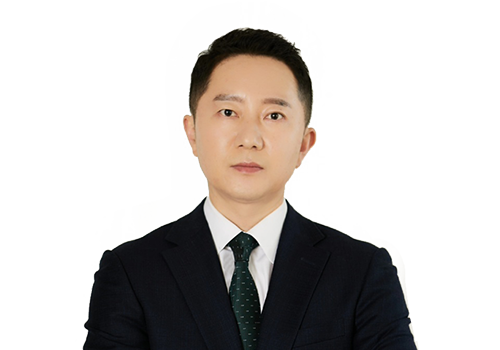

서울대학교 정치학과 · 제43회 사법시험 · 사법연수원 33기. 창원·인천·서울남부지방법원에서 11년간 판사로 재직하며 5년간 형사재판을 담당했습니다. 판사 경험을 바탕으로 형사재판의 최선·최악 시나리오를 사전에 예측하여, 의뢰인에게 가장 유리한 변론 방향을 설계합니다. 월간 수임 건수를 제한해 한 사건 한 사건에 깊이 집중하는 것을 원칙으로 합니다.
